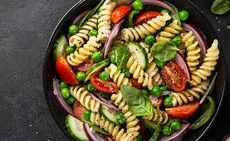

Inicio
Ensalada de Pasta

Descripción
Esta receta fácil de ensalada de pasta se prepara rápidamente con ingredientes convenientes y verduras coloridas.
Encontrará una lista detallada de ingredientes e instrucciones paso a paso en la receta a continuación
Ingredientes
- 1 libra de pasta espiral tricolor
- 1 botella (16 onzas) de aderezo para ensaladas estilo italiano
- 6 cucharadas de mezcla para condimentos para ensaladas
- 2 tazas de tomates cherry, cortados en cubitos
- 1 pimiento verde picado
- 1 pimiento rojo, cortado en cubitos
- ½ pimiento amarillo picado
- 1 lata (2,25 onzas) de aceitunas negras picadas
Pasos
- Reúne todos los ingredientes.
- Ponga a hervir una olla grande con agua ligeramente salada. Cocine la pasta en el agua hirviendo, revolviendo ocasionalmente, hasta que esté tierna pero firme al morder, unos 10 a 12 minutos; enjuague con agua fría y escurra.
- Bata el aderezo italiano y la mezcla de especias para ensalada hasta obtener una mezcla homogénea. Combine la pasta, los tomates, los pimientos y las aceitunas en una ensaladera.
- Vierta el aderezo sobre la ensalada y revuelva para cubrir.
- Para obtener el mejor sabor, refrigere la ensalada de pasta durante 8 horas o durante toda la noche.
- ¡Disfrutar!